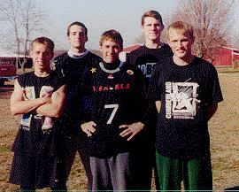
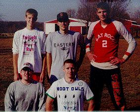
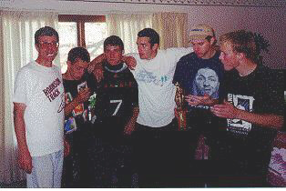

Saturday, November 13th - After all of the talk and anticipation, Cork Bowl IX lived up to all expectations and provided the closest finish in the nine year history of Cork Bowl. In front of a record-breaking crowd reaching into double-digits, the Weasels outlasted the Hoot Owls for a 133-126 victory. "For two teams to play for nearly 2 hours and have the game decided by just one score is amazing," commented League Commissioner and Weasel receiver Patrick Cork. Just like each year, the weather played a factor in the game, but for different reasons than those of the past. Instead of snow and cold, wet conditions, temperatures stretched into the high 70's and visibly wore down both teams as the game went on. Ironically, most of the sloppy play took place early though.

Pictured at right are the Weasels. (L-R) Greg Howard, Patrick Cork, Willy Truitt, Chris Cork, and Ryan Tomlinson
The Weasels took possession to start the game and scored on a 4-play drive capped off by a Willy Truitt to Chris Cork touchdown catch. The Hoot Owls countered with Kevin Ryan making the start at quarterback. The much anticipated debut of Kirby Newell (who hadn't played QB since '95), who was his team's self-proclaimed savior and leader at the QB spot, would have to wait. Ryan started with a quick dump to Newell who powered his way down the field for an opening play touchdown to tie the game at 7. The first big defensive play took place on the ensuing possession when Willy Truitt was picked off by Josh Williamson on a deep pass. However, in what would be a recurring theme, the Hoot Owls were unable to capitalize off the turnover when Ryan's pass was tipped up and intercepted by Patrick Cork. Patrick would later catch a touchdown pass to give the Weasels a 14-7 lead. After a Ryan to Williamson touchdown pass, Willy Truitt threw his second interception of the game when another deep pass was held up by the wind and picked off by brother Reggie. The Hoot Owls gave the ball right back when Ryan was intercepted by Willy Truitt who returned the ball deep into Hoot Owl territory. However, Truitt threw four incomplete passes giving the Hoot Owls the ball back. Once again, the Hoot Owls could not capitalize on the break and turned the ball back over to the Weasels on downs. At this point, the two teams had combined for just 4 touchdowns in nearly 17 minutes and had thrown 4 interceptions and turned the ball over twice on downs. "Right then I was fearing another Cork Bowl 7 outcome (in which the two teams combined for 13 turnovers and numerous dropped passes)," added Patrick. "The sad thing was, that it wasn't the fact we were playing great defense, but both offenses were just pathetic." Greg Howard ended the scoreless stretch with his first touchdown catch which was followed by a Reggie Truitt touchdown run (Truitt had just entered the game at QB). Chris Cork concluded the first quarter on the receiving end of a gorgeous bomb from Willy Truitt that gave the Weasels a 28-21 lead.
Behind quarterbacks Willy and Reggie Truitt, the teams traded touchdowns to start the 2nd quarter. With the Hoot Owls trailing 42-35, Newell made his first appearance at QB to a thunderous applause from the anxious crowd. Newell marched his team down the field for a score on a dump-off pass to rookie Josh Helton for his first career Cork Bowl touchdown.

The Hoot Owls from left to right are : (Back Row) Josh Helton, Reggie Truitt, Kirby Newell (F-R) Kevin Ryan and Josh Williamson
Again, both teams scored at will and with 1:50 left in the first half, Josh Williamson tied the game at 56 with a touchdown reception. What followed was a play that could have cost the Weasels the game. Chris Cork caught a short pass in the flat and attempted a cross-field lateral to brother Patrick. The ball was inadvertently tipped in the air by Greg Howard and was grabbed in midair by Reggie Truitt who walked it into the endzone to give the Hoot Owls their first lead at 63-56. Another Greg Howard touchdown tied the game at 63, and a Reggie to Kevin Ryan touchdown pass ended the first half with the Hoot Owls leading 70-63. "That play really hurt us at the time," remarked Patrick Cork. "It was just a stroke of bad luck because if that ball wasn't tipped, there was a chance we would have scored because the field was wide open down the sideline."Greg Howard had a huge first half for the Weasels and led all players with 4 first half touchdown catches, all thrown by Willy Truitt. Willy threw for 8 first half touchdowns. The Hoot Owls used three quarterbacks in the first half with Reggie Truitt leading them with 4 touchdowns passes, one touchdown run, and one fumble return for a TD.
The Hoot Owls started the second half with possession and a chance to push the lead to 14. However, Reggie was unable to move the offense and the Hoot Owls turned the ball over on downs. Patrick Cork caught his second touchdown pass of the game to tie the game at 70, but Reggie countered with another rushing TD. The Weasels were unable to score on the next possession, but did catch another break when an errant pass was nearly picked off by Kirby Newell. Newell had plenty of field in front of him and would have most likely scored on the play. It hurt the Hoot Owls because they were unable to capitalize on the turnover on downs again as the Weasels came up with yet another big defensive stand. A Patrick Cork touchdown catch tied the game at 77, and after a touchdown from Helton and another one from Howard (his fifth in the game), Kevin Ryan returned to the quarterback spot to find Josh Williamson for another touchdown and a 91-84 Hoot Owl lead after three quarters.
The Weasels were faced with a tough situation in that they needed to score on every possession in the fourth quarter to put the pressure back on the Hoot Owls. They opened the quarter with a touchdown, but it was countered again by the Hoot Owl offense led by Kevin Ryan. With the score tied at 98, the Weasels blitzed Ryan, but he was able to bounce off of the rush and power his way into the endzone for a huge touchdown run and a 105-98 lead. On the next drive, the Weasels were faced with their most important play of the game with a fourth and short play in Hoot Owl territory, but Willy found Patrick open over the middle for the completion, and Patrick was able to shake several defenders and scamper into the endzone to tie the game at 105. Although Kevin had been successful on three consecutive drives, Reggie Truitt got the call from the Hoot Owl sideline and turned the ball over on downs to the Weasels. Unlike the Hoot Owls, the Weasels were able to capitalize off of the turnover when Ryan Tomlinson made a huge catch in the corner of the endzone with 12 minutes left to give the Weasels their first lead since late in the first half. Kirby Newell came right back by turning another short pass from Kevin Ryan into a touchdown to tie the game at 112. After another touchdown from Howard and one from Reggie Truitt, Patrick Cork scored on another catch-and-run play to give the Weasels a 126-119 lead.
The play that followed was this year's game-altering one. Kevin Ryan, who had been brilliant since his two early first quarter interceptions, tried to force a deep pass into Kirby Newell. The ball hung just long enough for Chris Cork to make a leaping interception which he returned deep into Hoot Owl territory. When asked what he was thinking when the ball was in the air, all Chris thought was, "That's mine." Willy Truitt rushed the ball in for a 133-119 lead with 3:50 to go. "That was the break we needed," added Patrick. "Every year it seems that one play comes up that decides the game. That interception was this year's play." The Hoot Owls still had a chance with nearly 4 minutes left in the game and 2 timeouts, but it took them until the 1:40 mark to get a score on a Ryan to Newell touchdown pass. The Hoot Owls were now down to just one timeout, but if they could stop the Weasels from getting a first down, they would get the ball back with about 40 seconds left. After a long Willy Truitt run, the Weasels were faced with a 3rd and 6 play near midfield. Willy found Patrick over the middle short of the first down marker, but he was able to spin and dive across the marker for the first down and the Weasels ran two more plays to run out the clock on their 133-126 win.

The Weasels celebrate with the 1999 Cork Bowl trophy presentation
Like they needed to, the Weasels scored on all of their fourth quarter possessions (excluding the last drive when they ran out the clock), and outscored the Hoot Owls 49-35 in the quarter. "We were faced with the situation that we needed to score every time we had the ball, and we had to stop them at least once just to have a chance," remarked defensive hero Chris Cork. "We did both." The most shocking statistic from this year's game was the ability to capitalize off of turnovers. The Weasels were able to score 28 points off of 6 possessions that came off of turnovers or turnovers on downs. The only two times in which the Weasels were unable to turn a turnover into points were early in the first quarter. The Hoot Owls showed the exact opposite efficiency. Out of 5 turnovers/turnovers on downs by the Weasels, the Hoot Owls scored only one time and that was on the botched lateral play in which Reggie Truitt ran the fumble back for the touchdown. They also started the second half with the ball and were unable to score then either. "It seemed to me that every time we would turn the ball over, they would give it right back to us," added Patrick. "I think that stat was the most important of the game because it shows how teams take advantage of the other's mistakes. Obviously we did and they didn't and that's why we won." It was definitely one of the most grueling battles Cork Bowl has ever seen, with the heat wearing all of the players down. Ironically, the fourth quarter was the best played quarter in the game with the teams combining for 84 points in it. After a rough start, Willy Truitt finished the game 35-62 with 17 touchdowns. Reggie Truitt was 18-37 for the Hoot Owls with 5 touchdowns and Kevin Ryan was 16-28 with 7 TD's, but 3 interceptions. Newell saw limited action at the quarterback position, but finished 8-12 with 2 touchdowns. Newell led the game in receptions with 15 and scored 6 times. Patrick Cork had 14 catches and 6 touchdowns for the Weasels to receive his 2nd consecutive MVP award, but Greg Howard was the spark the Weasels needed to win. Howard had 9 catches, and turned all but three of them into scores for a career-high 6 touchdown catches. "You expect Chris and Patrick to get a lot of catches, but Greg was unexpected and made the difference in the game," remarked announcer, and recent Cork Bowl retiree Tony Cork. "When they had double coverage on Chris or Patrick, Willy found Greg almost every time and he scored on almost all of his catches." Defensively, Patrick led the Weasels with 10 tackles and had one interception. The defensive balance for the Weasels was the by the far the best in history with Chris Cork, Willy Truitt, and Greg Howard all finishing with 6 tackles, and Ryan Tomlinson finishing with 5. The Hoot Owls were led by Reggie Truitt's 9 tackles while Josh Williamson and Kirby Newell had 8 and 7 respectively.
Check out the Cork Bowl 9 final stats
Check out the sights of Cork Bowl 9
CORK BOWL 9 SET FOR NOVEMBER 13TH
The preliminary details of Cork Bowl 9 have been made by Commissioner Patrick Cork. The date has been set for Saturday, November 13th at Cork Coliseum. The teams are finalized and rosters have been made available to the press. The Cork brothers will look to lead The Weasels to another victory after last year's win. Willy Truitt, Ryan Tomlinson, and Greg Howard will join the Corks. For the contending Hoot Owls, Kirby Newell will look to lead his troops by possibly making an appearance at quarterback. Newell has questioned previous teammates for their lack of leadership and is looking to provide some of his own at quarterback. Reggie Truitt, Josh Williamson, Kevin Ryan, and Josh Helton will try to help Newell get back on the winning track after last year's disappointing loss.
Once again, the tension between these two teams is very high. The trash-talking has begun with even more flare than in the past. Chris Cork stumbled onto a recipe for "Hoot Owl Pie" while searching on the internet and the recipe has been passed along to teammates as well as opponents. The Vegas line on the game was 6 1/2 in favor of the Weasels, but after the announcement that Newell would start at quarterback for the Hoot Owls, Chris Cork claimed the odds vaulted up to 21. The rivalry between Newell and Cork is in the spotlight again. With Newell QB'ing, he will be fresh on defense to guard Chris and maybe lower Chris's record-setting touchdown mark of 7 one year ago. Another intriguing matchup is Ryan Tomlinson and rookie Josh Helton. As everyone knows, rookies never perform well in Cork Bowl and Tomlinson has vowed this year will be no different. The "T" Factor (as his teammates call it) will most likely be in effect once again. Josh Williamson has gone so far as to list Weasels as Endangered Species on his jersey. Williamson might want to catch more balls than he drops before adding fuel to the Weasels' fire. Once again, the game is set for Saturday November 13h and is set to start at 11:13 a.m. with a pregame retirement ceremony for last year's winning quarterback Tony Cork.
TOMLINSON SICK; WEASELS DEVASTATED
The Weasels camp has been devastated to find out that Ryan Tomlinson is suffering from a fever, and body aches and pains from the fever. The locker room was silent today as they were without their inspirational leader. In fact, the news of Tomlinson's illness spread immediately to the oddsmakers as the vegas line for the game plummeted from 23 1/2 points in favor of the Weasels all the way down to 1 1/2 points at one spot today. It has since raised back to 6 1/2 points. Only time will show if the Weasels are able to fight through this devastating moment especially because the incident took place so close to gameday. A Tomlinson less than 100% on the field will have tremendous effects of the outcome of the game. "For us to have Ryan get sick at this point is very rough," commented teammate Patrick Cork. "We know if he is alive come Saturday that he'll play, but you still have to wonder how effective he will be. I can speak for all my teammates when I say we'll be dedicating this game to Ryan."
---Weasel Public Relations Office
CORK BOWL 9 INJURY REPORT AS OF 8:45 PM NOVEMBER 11TH
Weasels - Ryan Tomlinson - high fever, sore throat, lack of arm movement (questionable); Patrick Cork - high hip bruise (probable); Chris Cork - left hand contusion (probable); Willy Truitt - eye infection (probable)Hoot Owls - Kirby Newell - mild hernia, gangrene (probable); Josh Williamson - stone hands, butter fingers (probable); Josh Helton - fear (questionable)